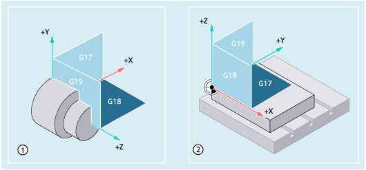
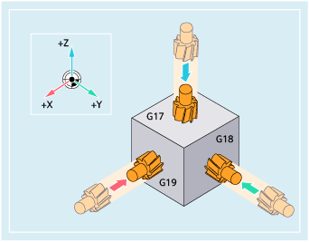

An NC program requires information about the machining plane. Because only then can the control correctly take into account the tool offset values, for example. The specification of the machining plane is also required for certain types of circular-path programming and polar coordinates.
The machining plane is specified in the Cartesian workpiece coordinate system used as basis using two coordinate axes. The third coordinate axis is perpendicular to this machining plane and determines the infeed direction of the tool (e.g. for 2D machining).
The machining planes are activated in the NC program using G commands G17, G18 and G19. The relationship is defined as follows:
G command | Machining plane | Abscissa | Ordinate | Applicate ≙ infeed direction |
|---|---|---|---|---|
G17 | X/Y | X | Y | Z |
G18 | Z/X | Z | X | Y |
G19 | Y/Z | Y | Z | X |
In the default setting, G18 (Z/X plane) is defined for turning and G17 (X/Y plane) is defined for milling:
Machining planes when turning ① and milling ②
Feed directions for milling